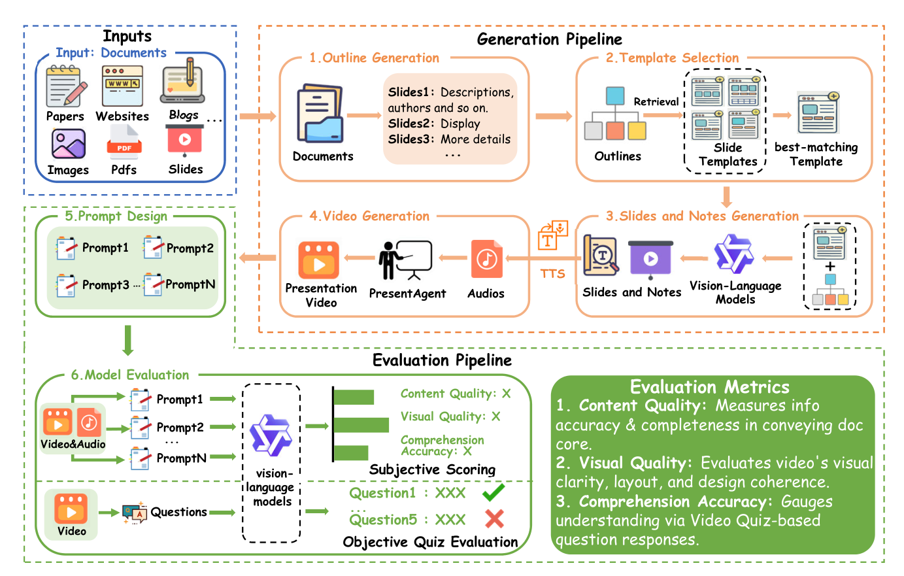
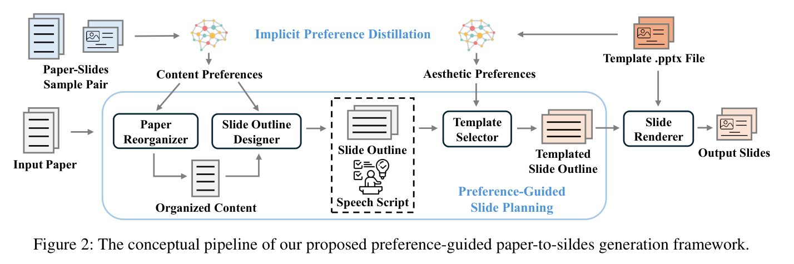

两篇 AI 辅助演示文稿生成领域的代表性工作，分别来自 EMNLP 2025 System Demo 和 AAAI 2026 主会。
从任务定位、技术路线、实验设计和落地前景四个维度进行系统性对比。
Document-to-Presentation Video Generation — 端到端文档到演示视频生成系统
解析 PDF 文档，提取文本、图表、布局信息，构建结构化文档表示
基于 LLM 规划幻灯片结构与内容分配，确定每页的主题、要点和视觉元素
为每张幻灯片生成解说文本，通过 TTS 合成同步旁白音频
将幻灯片画面与音频时间轴对齐，合成最终演示视频

Figure 3: PresentAgent 完整框架 — 生成管线（Step 1-4）与评估管线（Step 5-6）
输入文档（PDF、网页、Markdown、博客等）首先经过结构化解析，将内容映射为层级化的 topic–subtopic 树形结构。随后 LLM 基于文档结构生成演示大纲（Outline），将文档分割为若干语义块，每个语义块对应一张计划中的幻灯片。
为每个语义块分配一个幻灯片类型（标题页、项目列表、图表说明等），并通过检索匹配找到最合适的模板布局。匹配依据包括内容语义和结构线索（非简单关键词匹配）。选定模板后，系统定义一组可编辑操作（replace_text、insert_image、add_list）用于后续内容填充。
这是核心生成步骤，由VLM（视觉语言模型）驱动。基于大纲和选定的模板，模型同时完成两项任务：
(a) 幻灯片内容填充——将论文中的关键信息（标题、要点、图表）映射到模板布局中，从论文中检索并插入相关图片；
(b) 旁白脚本生成——LLM 将每张幻灯片的关键信息改写为自然口语化叙述，避免密集文本和技术术语，时长控制在 30–150 秒。
最终输出：一套完整的幻灯片 + 每张幻灯片对应的旁白文本。旁白文本随后通过 MegaTTS 3 合成为 24kHz 高保真音频。
使用 FFmpeg 将幻灯片图像与旁白音频进行时间对齐合成。每张幻灯片显示时长 = 其对应旁白音频的时长。支持淡入/淡出转场效果和可选字幕叠加。最终输出 1080p 标准 .mp4 视频文件。
为每个评估维度设计专用 Prompt。客观评估：为每篇文档人工编制 5 道多选题（覆盖主题识别、结构理解、核心论点提取）。主观评估：设计 3 维度评分 Prompt（叙事连贯性、视觉/音频吸引力、理解难度），引导 VLM 从观众视角打分。
客观测验：使用 Qwen-VL-2.5-3B 观看完整视频后回答 5 道题，正确数即为理解得分（0–5）。主观评分：视频部分用 Qwen-VL 评估（内容/视觉/理解），音频部分用 Qwen-Omni-7B 评估（内容/音频/理解），均为 1–5 分。由于长视频超过 2 分钟时单一多模态模型难以联合处理，采用分段评估策略。
双路径评估方案：客观路径通过自动生成 quiz 衡量信息保留度，主观路径从视频质量、音频质量等维度打分。
| Method | Quiz Accuracy | Video Score | Audio Score |
|---|---|---|---|
| Human (Baseline) | 0.56 | 4.47 | 4.80 |
| Claude-3.7-Sonnet | 0.64 | 4.00 | 4.53 |
| GPT-4o-Mini | 0.64 | 4.67 | 4.40 |
| Qwen-VL-Max | 0.52 | 4.47 | 4.60 |
| Gemini-2.5-Flash | 0.52 | 4.33 | 4.40 |
注：Quiz Accuracy 衡量观众在观看视频后回答内容相关问题的准确率；Video/Audio Score 为 1-5 分主观评分。GPT-4o-Mini 在 Video Score 上超越人类基线。
Preference-Guided Paper-to-Slides Generation — 基于偏好蒸馏的论文到幻灯片个性化生成
用户不需要编写复杂的指令，而是通过提供一对示例幻灯片（sample pair）和一个模板（template）来表达自己的偏好。系统从示例对中隐式学习用户的选择偏好（内容筛选、组织方式、详略取舍），并按模板风格生成最终幻灯片。这种 "Show, don't tell" 的范式极大降低了用户的使用门槛。
从用户提供的示例对中，通过对比学习提取隐式的选择偏好，构建用户偏好模型
利用蒸馏得到的偏好模型指导幻灯片的内容规划与结构设计，确保输出符合用户风格
根据规划结果和模板约束，生成可编辑的 .pptx 幻灯片文件

Figure 2: SlideTailor 概念管线 — 偏好蒸馏 → 内容规划 → 幻灯片实现
从用户的两种隐式输入中蒸馏出显式的、结构化的偏好表示 P = PC ∪ PA。这一阶段是整个框架的基础，将无标签的用户信号转化为可执行的生成约束。
输入：论文-幻灯片样本对 (Dref, Sref)
方法：LLM 将样本对中的转换建模为隐函数 f: Dref → Sref，推断用户的内容选择策略、强调/省略模式、排序偏好
输出：结构化偏好档案，包含叙事流程（如 Title → Background → Method → Results → Future Work）和章节级格式偏好
输入：用户提供的 .pptx 模板文件
方法：VLM 推断模板中每个幻灯片的功能角色（标题区、正文区、图片区），同时从原始 .pptx 解析精确元数据（边界框位置、尺寸）
输出：结构化审美模式，描述每个模板 slide 的内容 Schema（位置、尺寸、类型等）
三个 LLM-powered Agent 协同工作，将蒸馏出的偏好 P 转化为具体的幻灯片规划方案：
根据内容偏好 PC 对输入论文进行面向演示的重构——调整叙事流程（如先讲动机再讲方法还是反过来）、控制各部分详略（如精简 Related Work、展开 Results），输出一份"面向演示的文档"。这一步不是简单的摘要，而是结构化的内容重组。
将重组后的内容分割为连贯的幻灯片大纲，每张幻灯片明确其"要传达的信息"和"视觉提示"（如需要插入论文中的哪张图表）。
核心机制——Chain-of-Speech：在规划每张幻灯片的同时，同步模拟演讲者的口头叙述。例如规划"实验结果"幻灯片时，CoS 会生成类似"Our experiments demonstrate that..."的演讲脚本。这一机制确保视觉内容与预期口头表达深度对齐，而非先做幻灯片再补旁白。输出的演讲脚本 T 还可用于下游 TTS 生成个性化语音。
基于审美偏好 PA，为每张幻灯片匹配用户模板中最合适的布局。例如标题页选用 slide-0（标题+副标题），结果页选用 slide-2（图文混排+表格）。每张幻灯片附带 Layout Recommendation 和 Layout Justification。
将规划方案落地为实际的 .pptx 文件。布局感知 Agent将规划内容（标题、文本、图表）映射到选定模板的具体元素（文本框、图片占位符）——可能涉及修改、替换或插入操作。随后代码 Agent生成可执行的 Python 代码，通过 python-pptx 直接编辑 .pptx 文件。这一编辑式策略保留了模板的原始布局和主题，输出完全可编辑的幻灯片，用户可进一步微调。
SlideTailor 的核心创新之一。通过构建 "Chain-of-Speech"（语音链），系统在规划阶段模拟人类演讲者的思维过程：先确定要"说"什么（口语化内容规划），再决定如何"展示"（视觉布局与排版）。这一机制使得生成的幻灯片在内容组织上更符合口头演讲的逻辑流，而非简单的论文段落搬运。Chain-of-Speech 将"演讲意图"显式建模为中间表征，桥接了论文内容与幻灯片表达之间的语义鸿沟。
为支撑偏好学习与评估，构建了大规模偏好数据集 PSP (Preference-Guided Slide Pairs)：
组合约 100K 种偏好组合，覆盖多样化的幻灯片风格与内容取舍。
| Method | Overall Score |
|---|---|
| ChatGPT (Direct) | 62.86 |
| AutoPresent | 48.78 |
| PPTAgent | 67.30 |
| SlideTailor (Qwen) | 69.21 |
| SlideTailor (GPT-4.1) | 75.80 |
六维度逐项对比，一目了然
点击展开查看详细分析
七维度横向评分，直观呈现两篇论文的相对优势
不同研究目标下，最优选择策略
如果目标是发顶会论文，SlideTailor 的方法论深度、评估体系完整度和创新性（CoS + 偏好蒸馏）更具研究价值，且 AAAI 主会认可度更高。
取两者之长：SlideTailor 的偏好学习 + Chain-of-Speech 用于内容规划，PresentAgent 的多模态融合 + TTS 用于视频输出。构建一个 "偏好驱动的端到端演示视频生成" 系统，既有学术深度，又有产品完整性。
如果目标是快速构建可用产品，PresentAgent 的端到端视频生成更直接、用户门槛更低，适合快速验证市场需求。
核心问题的思考与解答
基于两篇论文的局限性与互补性，梳理可行的科研方向
从学术论文扩展到技术文档、商业报告、课堂笔记。核心挑战是不同文档类型结构差异大，偏好蒸馏能否跨领域迁移。
目标会议：ACL / AAAI多样本聚合提取更鲁棒的用户画像，交互式偏好学习（Active Learning），偏好维度细分。
目标会议：EMNLP听众感知（专家 vs 本科生生成不同脚本）、多语言跨语言演讲规划、时间约束感知（5 分钟 vs 20 分钟）、情感风格控制。
目标会议：ACL / NAACL替代 Prompt-based 方案，构建标注数据集训练专用 Slide Generation Model（基于 LLM 做 SFT），降低成本提升可控性。
目标会议：ACL / EMNLP 主会引入偏好条件（节奏 / 信息密度 / 正式度），声纹个性化（几秒语音克隆），演讲风格迁移。
目标会议：ACM Multimedia元素级动画（文字逐条出现、图表渐进显示），智能转场设计，镜头感（放大关键数据区域）。用 reveal.js / animate.css 替代静态渲染。
目标会议：CHI扩大评估到 50–100 篇，跨模态对齐评估（不只分别评视频和音频），人类评估标准化（MOS + A/B Test），构建标准 Benchmark。
目标会议：ACL以 SlideTailor 偏好框架为骨架 + PresentAgent 多模态管线为输出。Pipeline：偏好蒸馏 → CoS 规划 → 幻灯片生成（.pptx）→ TTS 旁白 → 视频组装（.mp4）。双输出格式。
技术挑战：偏好从静态到动态的传递、CoS 脚本与 TTS 时间对齐、联合评估标准设计。
目标会议：AAAI / ACL / CVPR 主会多轮交互打磨演示：生成初版 → 用户反馈 → 迭代优化。Human-in-the-Loop 多模态生成框架。
目标会议：NeurIPS / ICML综合学术价值、可行性与占位优势的推荐优先级
| Priority | Direction | Expected Output | Difficulty | Target Venue |
|---|---|---|---|---|
| 1 | Preference-Guided Doc-to-Video（融合） | 新任务 + 新方法 + 新 Benchmark | 中高 | AAAI / ACL / CVPR 主会 |
| 2 | Chain-of-Speech 深化（听众感知 / 多语言） | 增量创新 | 中 | EMNLP / NAACL |
| 3 | Interactive Presentation Agent | 新范式 | 高 | NeurIPS / ICML |
| 4 | 领域泛化（论文 → 通用文档） | 数据集 + 基线扩展 | 低中 | ACL Findings / AAAI |
| 5 | 端到端训练替代 Prompt-based | 模型层贡献 | 高 | ACL / EMNLP 主会 |
同时解决两篇论文的核心缺陷——PresentAgent 的无个性化 + SlideTailor 的无视频输出。任务定义新颖（目前无人涉足），实验设计路径清晰（偏好评估 + 视频质量 + 联合评估），且 Chain-of-Speech 天然桥接了幻灯片和视频生成。占位价值极强。